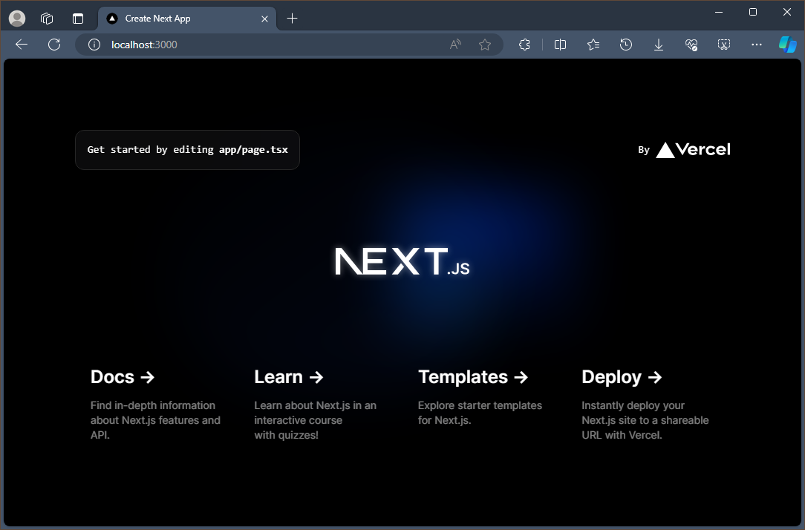

Get started with Next.js on Windows
A guide to help you install the Next.js web framework and get up and running on Windows.
Next.js is a JavaScript framework tailored for building React-based web applications, offering support for both static and server-side rendered web applications. Built with best practices in mind, Next.js enables you to create "universal" web apps in a consistent manner, requiring minimal configuration. These "universal" server-rendered web apps, also referred to as “isomorphic”, share code between the client and server. Next.js enables developers to create fast, scalable, and SEO-friendly web applications with ease.
To learn more about React and other JavaScript frameworks based on React, see the React overview page.
Prerequisites
This guide assumes that you've already completed the steps to set up your Node.js development environment, including:
- Install the latest version of Windows 10 (Version 1903+, Build 18362+) or Windows 11
- Install Windows Subsystem for Linux (WSL), including a Linux distribution (like Ubuntu) and make sure it is running in WSL 2 mode. You can check this by opening PowerShell and entering:
wsl -l -v - Install Node.js on WSL 2: This includes a version manager, package manager, Visual Studio Code, and the Remote Development extension.
We recommend using the Windows Subsystem for Linux when working with NodeJS apps for better performance speed, system call compatibility, and for parity when running Linux servers or Docker containers.
Important
Installing a Linux distribution with WSL will create a directory for storing files: \\wsl\Ubuntu-20.04 (substitute Ubuntu-20.04 with whatever Linux distribution you're using). To open this directory in Windows File Explorer, open your WSL command line, select your home directory using cd ~, then enter the command explorer.exe . Be careful not to install NodeJS or store files that you will be working with on the mounted C drive (/mnt/c/Users/yourname$). Doing so will significantly slow down your install and build times.
Install Next.js
To install Next.js, which includes installing next, react, and react-dom:
Open a WSL command line (ie. Ubuntu).
Create a new project folder:
mkdir NextProjectsand enter that directory:cd NextProjects.Install Next.js and create a project (replacing 'my-next-app' with whatever you'd like to call your app):
npx create-next-app@latest my-next-app.Once the package has been installed, change directories into your new app folder,
cd my-next-app, then usecode .to open your Next.js project in VS Code. This will allow you to look at the Next.js framework that has been created for your app. Notice that VS Code opened your app in a WSL-Remote environment (as indicated in the green tab on the bottom-left of your VS Code window). This means that while you are using VS Code for editing on the Windows OS, it is still running your app on the Linux OS.
There are 3 commands you need to know once Next.js is installed:
npm run devto start Next.js in development mode.npm run buildto build the application for production usage.npm startto start a Next.js production server.
Open the WSL terminal integrated in VS Code (View > Terminal). Make sure that the terminal path is pointed to your project directory (ie.
~/NextProjects/my-next-app$). Then try running a development instance of your new Next.js app using:npm run devThe local development server will start and once your project pages are done building, your terminal will display
- Local: http://localhost:3000 ✔ ReadySelect this localhost link to open your new Next.js app in a web browser.

Open the
app/page.tsxfile in your VS Code editor. FindGet started by editing..and replace everything inside the<p>tag withThis is my new Next.js app!the page title. With your web browser still open to localhost:3000, save your change and notice the hot-reloading feature automatically compile and update your change in the browser.
You can use VS Code's debugger with your Next.js app by selecting the F5 key, or by going to View > Debug (Ctrl+Shift+D) and View > Debug Console (Ctrl+Shift+Y) in the menu bar. If you select the gear icon in the Debug window, a launch configuration (launch.json) file will be created for you to save debugging setup details. To learn more, see VS Code Debugging.

To learn more about Next.js, see the Next.js docs.